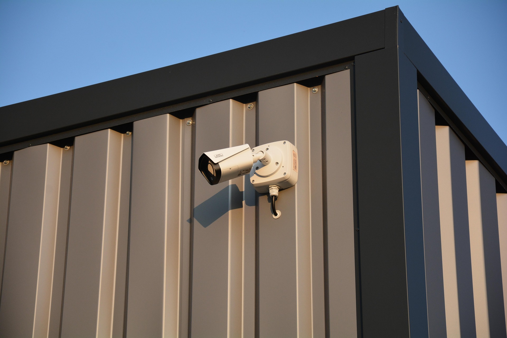
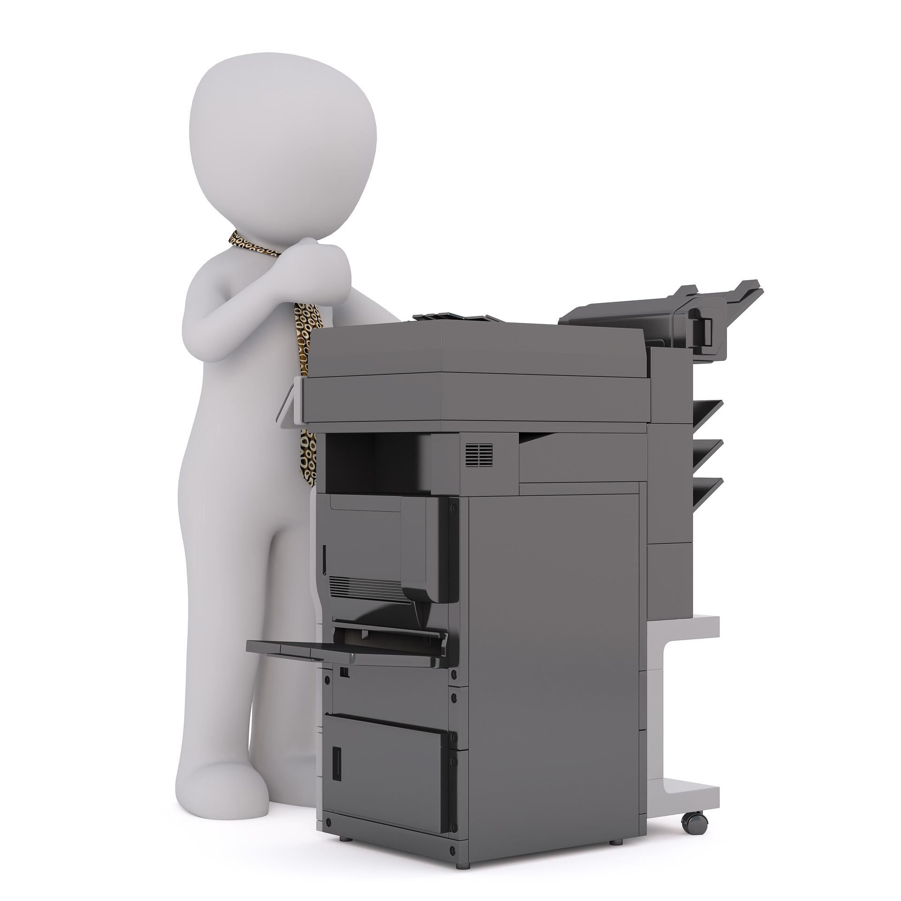

At Pro-IT Solutions, we are dedicated to keeping your digital world running smoothly and securely. Whether you are looking to dominate the leaderboard with a high-performance custom-built gaming rig, need a reliable pre-built PC, or want to pick up an affordable, certified second-hand laptop, we have the perfect hardware match for your needs and budget. Beyond sales, our expert technicians provide fast, dependable repair services for both computers and printers to get your essential tools back up and running in no time. Plus, we help safeguard what matters most by supplying and expertly installing top-tier surveillance camera systems for your home or business. No matter the tech challenge, we deliver the tailored solutions, quality equipment, and trusted support you deserve.



